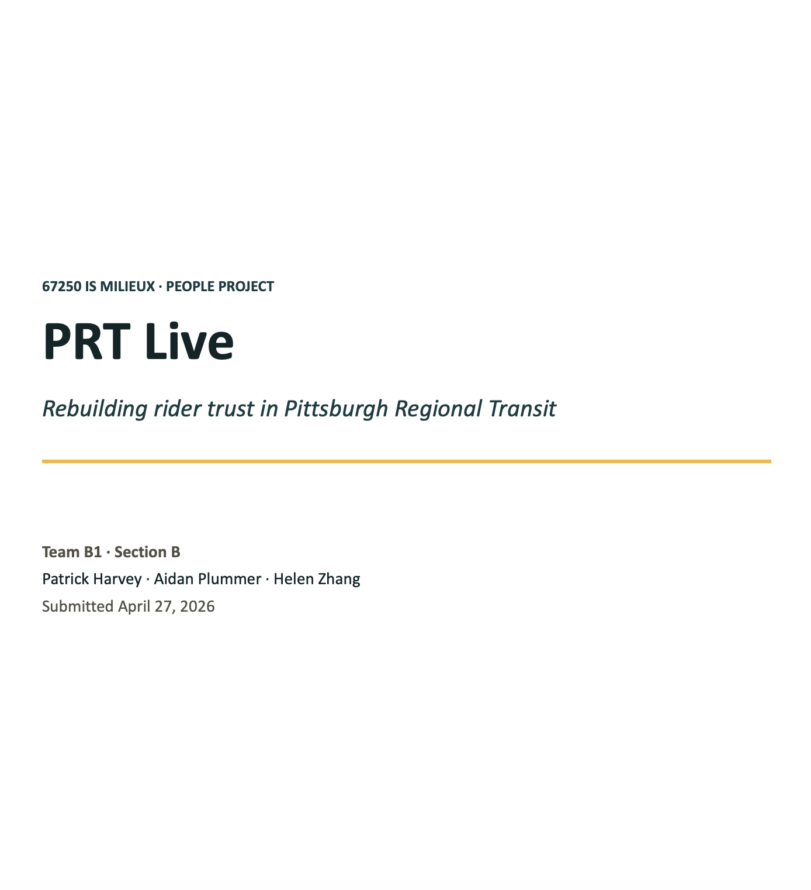

66%
on-time performance
67250 IS Milieux · People Project
Rebuilding rider trust in Pittsburgh Regional Transit
PRT already has GPS hardware, network infrastructure, and an existing tracking stack. PRT Live focuses on the trust gap: when schedule logic and street reality diverge, riders lose visibility exactly when they need it most.
on-time performance
PRT target
annual rides served

Problem · Opportunity · Context
Research shows a repeating pattern: buses can be physically tracked, but riders still see disappearances, unclear ETAs, and silent failures. That trust collapse pushes riders toward cars and ride-share, tightening budget pressure on a system they depend on.
Observed arrivals can vanish from public tools when buses go off-route or are not properly linked.
Riders cannot tell whether a bus is delayed, canceled, or simply unconfirmed by the system.
Transit-dependent riders are disproportionately harmed when service information is unreliable.
Stakeholders
Daily commuters, students, occasional riders, and transit-dependent residents.
Operators, dispatchers, and disruption teams who shape what reaches public feeds.
Clever Devices, Transit, and other third-party apps consuming PRT data.
PRT leadership, state funding stakeholders, and the broader Pittsburgh region.
Current System Breakdown
PRT's stack includes IVN GPS, BusTime prediction logic, GTFS-RT feeds, and app interfaces. The breakdown occurs at three points: route association, detour handling, and uneven information distribution.
Different operator login methods create different data quality, including partial or non-public traces.
Unexpected detours can remove buses from public view until manual detour entry catches up.
Detour data availability differs across first-party and third-party app experiences.
"It's always tracking, but it depends what it's being, what it is able to link to show to the public."
"It would just be the manual process of putting those detours in those day-to-day incidents..."
Our Solution
PRT Live flips the logic: real-time vehicle position is the source of truth, and schedules become the plan that reality is compared against. When uncertainty appears, the system communicates it clearly.
Interactive prototype
Explore the wireframe flow for confidence-tagged arrivals, off-route visibility, and clearer detour communication in one place.
This is the interactive prototype of PRT Live (Figma). If the embedded preview does not load, open it in a new tab.
Three Pillars of PRT Live
Match buses to scheduled runs automatically using vehicle ID, time, block assignment, and GPS.
Flag off-route buses, keep them visible, pause unreliable ETAs, and alert disruption teams instantly.
Use confidence-tagged ETAs and active detour banners across first-party and third-party channels.
Current Experience vs. PRT Live
Strategic Analysis
For a public agency, competition is behavioral: riders can choose a bus, a car, a ride-share, or no trip. Each ghost-bus event is a small trust loss with system-level consequences.
Lower complaint burden and clearer reliability evidence for organizational decision-making.
Targets failures in inbound data linking, operations detour handling, and outbound rider communication.
Uses existing Clever Devices + HASTUS stack; focuses on integration and workflow redesign, not new hardware.
Social Theory
Performance depends on alignment between technical infrastructure and social workflow. PRT Live removes fragile handoffs.
Adoption improves when riders perceive reliability and ease of use. Honest confidence states strengthen long-term trust.
Clear status labels create actionable choices: wait, reroute, or switch modes with informed confidence.
Expected Impact
More measurable reliability telemetry and fewer support requests caused by invisible buses.
Better outcomes for riders with fewer alternatives and more reliable day-to-day mobility information.
Algorithm aversion, labor concerns, and platform-partner shifts require careful rollout and governance.
Team Collaboration
Twice-weekly integration rhythm with shared drafts, transcript synthesis, and evolving design artifacts.
Team Collaboration FolderFinal CTA
PRT Live is designed to work within real funding and infrastructure constraints while creating visible trust gains in daily rider decisions.
